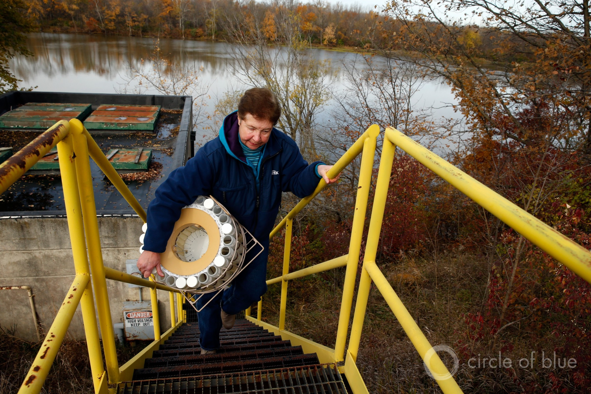

Federal Water Tap, June 17: Senators Release PFAS Bill Package
The legislation aims to force the EPA to regulate at least two PFAS chemicals in drinking water and monitor many others.Because of heavy spring rains, researchers forecast a large Lake Erie algal bloom and Gulf of Mexico dead zone.Eight senators call for more oversight of British Columbia mines that could harm salmon.The Supreme Court allows a civil lawsuit against Flint officials to proceed.TVA agrees to remove coal ash from an unlined pit that was polluting the Cumberland River in Tennessee.The GAO criticizes the Defense Department’s climate change planning.The Department of Energy analyzes the country’s geothermal power potential.The EPA’s draft Lead and Copper rule is in its final stage of internal review.And lastly, President Trump orders agencies to cut the number of expert advisory committees by at least one-third.
'Addressing climate change risks requires advanced planning and investment to reduce the need for far more costly steps in the decades to come, which, as we have previously reported, the federal government is not well organized to do.The costs associated with recent disasters have illustrated the need for such planning and investment.In 2018 alone, there were 14 separate billion-dollar weather and climate disaster events across the United States, with a total cost of at least $91 billion, according to the National Oceanic and Atmospheric Administration.'— Written statement from J.Alfredo Gómez, director of the Government Accountability Office’s natural resources and environment division.Gómez testified on June 11 in front of the House Budget Committee.
7,829 square miles: Size of the low-oxygen dead zone forecasted for this summer in the Gulf of Mexico.If the forecast holds, the dead zone would be just under the record, set in 2017.Wet weather this spring in the Mississippi River basin will load the gulf with nutrients.When the algae that feed on those nutrients die, their decomposition depletes the coastal waters of oxygen, which kills marine life.(NOAA)
One-third: Reduction in the number of expert advisory committees that President Trump ordered federal agencies to undertake.The EPA, for example, has 22 advisory committees, including ones for children’s health, environmental justice, environmental finance, drinking water, and science.The committees are to be eliminated by September 30, 2019, but agencies may request a waiver from the Office of Management and Budget if they want to keep more.(White House)
PFAS Package Members of the Senate Environment and Public Works Committee tied together several PFAS-related bills into an amendment that they hope to attach to a Defense spending authorization bill.
The amendment’s provisions do a number of things:
What is missing from the amendment is a requirement to list PFAS chemicals as hazardous substances under federal law, a move that would allow agencies to recover the cost of cleanup from polluters.
WOTUS Returned to EPA A federal judge rejected the EPA’s 2015 definition for what water bodies are regulated under the Clean Water Act and sent the rule back to the agency for revision.
The U.S. District Court for the Southern District of Texas ruled that the EPA failed to follow proper administrative procedures when it finalized the Waters of the United States rule.The agency, in its final rule, used distance-based criteria for determining regulatory boundaries that were not a part of earlier drafts.This omission deprived the public from commenting on the changes, the court ruled.
The lawsuit was filed by the states of Louisiana, Oklahoma, and Texas, along with trade groups representing agriculture, mining, construction, and fossil fuel industries.The agency itself is in the process of rewriting the Obama-era rule.
Transboundary Rivers Letter Eight senators who represent Pacific Northwest states sent a letter to the premier of British Columbia calling for more oversight of mining projects in transboundary rivers.
For several years the fishing industry, Indian tribes, green groups, and local governments have raised concerns about the harm that mine waste could cause in southeastern Alaska, particularly for salmon.
Senators from Alaska, Idaho, Montana, and Washington, each downstream of rivers that originate in British Columbia, signed the letter.
TVA Coal Ash Removal In a lawsuit settlement, a federal electric power agency agreed to remove coal-burning waste from unlined pits that were leaching toxic chemicals into the Cumberland River, the
Tennessean reports.
The Tennessee Valley Authority expects coal ash removal at Gallatin power plant to cost $640 million.The settlement gives TVA 20 years to complete the project.The TVA’s plan for how to proceed and what to do with the excavated waste will be released by September 2020.
Tennessee is littered with coal ash pits, which, in addition to the slow drip of pollutants, can be a source of catastrophic failure.The rupture of a coal ash impoundment at TVA’s Kingston power plant, near Harriman, Tennessee, in December 2008, resulted in the largest coal ash disaster in U.S. history.Some 5.4 million cubic yards of heavy metals and toxic material spilled into the Emory River.
Supreme Court Allows Flint Civil Lawsuits to Proceed The high court allowed a civil case against officials from Flint, Michigan to proceed,
NBC News reports.The case seeks damages from exposure to lead in drinking water.
U.S. Military and Climate Change Defense Department planners need more consistent evaluations of the risks of extreme weather and climate change for military installations, according to a Government Accountability Office report.
Construction project designs 'generally did not consider climate projections,' department officials told the GAO, which looked at 23 military installations.Fifteen installations had incorporated some sort of climate analysis into their master plans.Eight had not used any climate forecasts.
In the last year, hurricanes and floods caused billions of dollars of damage to Tyndall Air Force Base (Florida, $3 billion), Offutt Air Force Base (Nebraska, $420 million), and Camp Lejeune and Marine Corps Air Stations Cherry Point and New River (North Carolina, $3.6 billion).
Geothermal Potential The United States, by 2050, could source more than 8 percent of its electricity from the earth’s internal heat, according to a Department of Energy analysis of the country’s geothermal energy potential.That is a greater market share than is currently generated by hydropower, and it would represent a 26-fold increase in geothermal output.
Achieving the outcomes described in the GeoVision report requires new technologies and changes to the permitting process, the report argues.Water use is a 'minimal' factor, according to the report.Geothermal is less water-intensive than fossil fuels or nuclear power, but more than solar or wind.Alternative water sources such as municipal wastewater or brackish groundwater could offset increased demand from widespread deployment of geothermal technologies, the report states.
Algae and Dead Zones Wet weather in the Mississippi River and Lake Erie watersheds will give rise to water pollution problems this summer.
The annual low-oxygen dead zone in the Gulf of Mexico is expected to be one-third larger than the five-year average and near record size, according to a NOAA forecast.
In Lake Erie, meanwhile, researchers still expect an above-average harmful algal bloom, at least a seven on a 10-point scale.
Both forecasts are based on river flows, which transport the nutrients that feed algal growth.The decomposition of those organisms saps coastal waters of oxygen.The nutrients in these watersheds are largely nitrogen and phosphorus from farm fields.
White House Receives EPA’s Draft Lead and Copper Rule The EPA sent its draft revision of the Lead and Copper rule to the Office of Information and Regulatory Affairs.It’s the final stage of internal review before the draft rule is released to the public.EPA officials say they will publish the rule this summer.
The Motion in the Ocean A Department of Energy-funded competition to use wave power to remove salt from seawater has started.
Environmental Advisory Council Nominations The EPA is looking to fill seven vacancies on its environmental justice advisory council, assuming it continues to exist.The deadline for applications is July 15.
Federal Water Tap is a weekly digest spotting trends in U.S. government water policy.To get more water news, follow Circle of Blue on Twitter and sign up for our newsletter.
Brett writes about agriculture, energy, infrastructure, and the politics and economics of water in the United States.He also writes the Federal Water Tap, Circle of Blue’s weekly digest of U.S. government water news.He is the winner of two Society of Environmental Journalists reporting awards, one of the top honors in American environmental journalism: first place for explanatory reporting for a series on septic system pollution in the United States(2016) and third place for beat reporting in a small market (2014).He received the Sierra Club’s Distinguished Service Award in 2018.Brett lives in Seattle, where he hikes the mountains and bakes pies.Contact Brett Walton
Related
Posted On: 2019-12-23T00:00:00
Posted By: Brett Walton

Content Date: 2019-12-23
Download Date: 2021-05-12
Document ID: L0C04BJZW